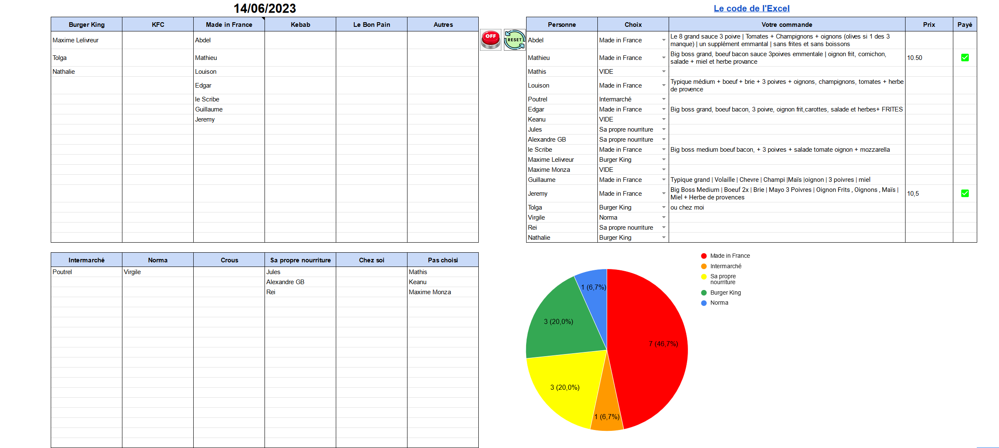
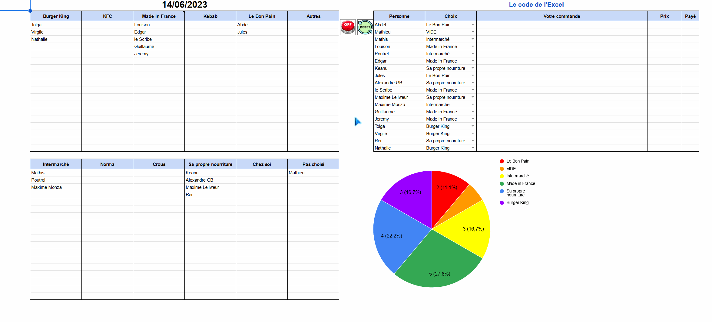
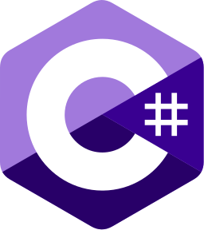

About me
Welcome to my portfolio ! I am a student pursuing a master degree in computer engineering through an apprenticeship program. I am passionate about emerging technologies and constantly seeking new opportunities to apply my skills and expand my knowledge. Within this portfolio, I have gathered my projects, achievements, and professional experiences to provide you with an overview of my journey and competencies.
Explore my portfolio to discover the breadth of my skills and accomplishments as a student in a computer engineering apprenticeship program. I have dedicated time and effort to develop tangible projects, putting into practice the knowledge and skills I have acquired throughout my studies. Through a range of projects, from web application development to tackling complex problem-solving, I have been able to enhance my technical abilities and explore new technologies.
My goal is to deliver innovative and efficient solutions using programming languages such as Java, Python, and JavaScript, along with modern frameworks and tools. I also possess a strong background in web technologies such as HTML, CSS, and databases. My approach centers around problem-solving and continuous improvement, always seeking to learn new technologies and take on new challenges.
Feel free to explore my portfolio to discover some of my notable projects, and don't hesitate to reach out if you would like to learn more or discuss potential collaborations. I am open to learning opportunities and collaborations, ready to contribute to exciting projects in the field of computer engineering.
My projects
GOOGLE SHEET
At CESI, the allotted time for meals is extremely short, leaving no room to waste time deciding who to eat with and where. This situation not only disrupts students' concentration but also hampers those who wish to work productively. As the responsible person for food services in the FISA A3 cohort, I took the initiative to solve this problem by proposing a clever solution : using a Google Sheet.
The Google Sheet I created allows students to easily choose their meals with a simple click, eliminating the need for coordination with their peers. Through this shared spreadsheet, each student can indicate their meal choice, which is then visible to the entire class. I integrated graphs to visualize the class's food preferences. These graphs enable everyone to quickly see the most popular options, facilitating decision-making. This eliminates time-consuming discussions and makes the decision-making process much faster and more efficient. Additionally, I also utilized custom scripts to automate certain tasks, such as a script ensuring the automation of the reset process, which simplifies the management of the Google Sheet.
 In addition to the Google Sheet solution for meal selection, I have also implemented a feature that allows students to access the history of previous weeks' meal choices. This feature not only provides a convenient way to review past preferences but also allows for valuable statistical analysis.
By maintaining a continuous record of meal selections, we can track trends and patterns in the choices made by the class. This historical data offers insights into the group's preferences and enables the analysis of eating habits. By consulting the history, students can make informed decisions based on past choices. Additionally, it facilitates the identification of popular dishes and common preferences, which can aid in better menu planning in the future.
Additionally, the history feature also helps enforce the rules and code of conduct of the Excel. It ensures that everyone adheres to the established guidelines and standards. Deviations or violations can be identified, which may result in appropriate actions or sanctions in accordance with
In summary, by offering this innovative Google Sheet, I aimed to solve the problems of time loss and decreased concentration that can occur during mealtime at CESI. This solution streamlines the meal selection process, allowing students to fully enjoy their mealtime and promoting an environment conducive to work and productivity.
My curriculum
2022-20??
Work-study apprentice developer
France, Vandœuvre-lès-Nancy, 19 Avenue de la Forêt de Haye
As an apprentice developer, I am fully committed to learning and developing practical skills within a dynamic company. I have the opportunity to work alongside an experienced team to design, develop, and implement innovative software solutions. My role involves contributing to the development of computer applications using programming languages such as C#, Java, HTML, JS, and CSS. Through this apprenticeship experience, I am strengthening my technical skills while becoming familiar with best software development practices, team collaboration, and solving real-world problems.
2022-2025
Master degree in computer engineer as work-study
Company: PREDICTFrance, Vandœuvre-lès-Nancy, 6 Rue Bois du Chêne le Loup
Currently in computer engineering training, I develop both advanced computer skills and expertise in team work. By specializing in areas such as programming, networking and computer security, I gain in-depth technical expertise. At the same time, the group projects in which I participate allow me to improve my interpersonal skills, such as communication, collaboration and team problem-solving, essential qualities for success in the field of computer engineering.
2020-2022
Computer science diploma specialized in mathematics for engineers
France, Nancy, 2Ter Bd Charlemagne
The computer science with a specialty in mathematics for engineering training allowed me to develop in-depth computer skills and work effectively as a team. I have acquired expertise in areas such as programming, databases and software design, while collaborating with my peers on concrete projects. This experience has enabled me not only to strengthen my technical skills, but also to develop my communication, problem-solving and collaborative skills, which are essential in the professional world of IT.
2017-2020
Scientific baccalaureate with mathematics specialization
France, Nancy, 2 Rue de la Visitation
This training has enabled me to develop the ability to work rigorously, analyze complex problems, and apply mathematical methods to solve real-life situations. These skills have proven valuable to me in various fields, including sciences, engineering, and computer science.
My skills
Web
-
 HTML
HTML
 JavaScript
JavaScript CSS
CSS PHP
PHP
Programming languages
- C#
 Java
Java Python
Python Scala
Scala
Database
 SQL
SQL MySQL
MySQL PostGreSQL
PostGreSQL DBeaver
DBeaver
Environment
- Windows
 Github
Github Visual Studio 2022
Visual Studio 2022 AzureDevOps
AzureDevOps
Spoken languages
 French - Native
French - Native English - 840 TOEIC (B2)
English - 840 TOEIC (B2)- German - A2
Non-technical skills
- Team working
- Communication
- Problem solving